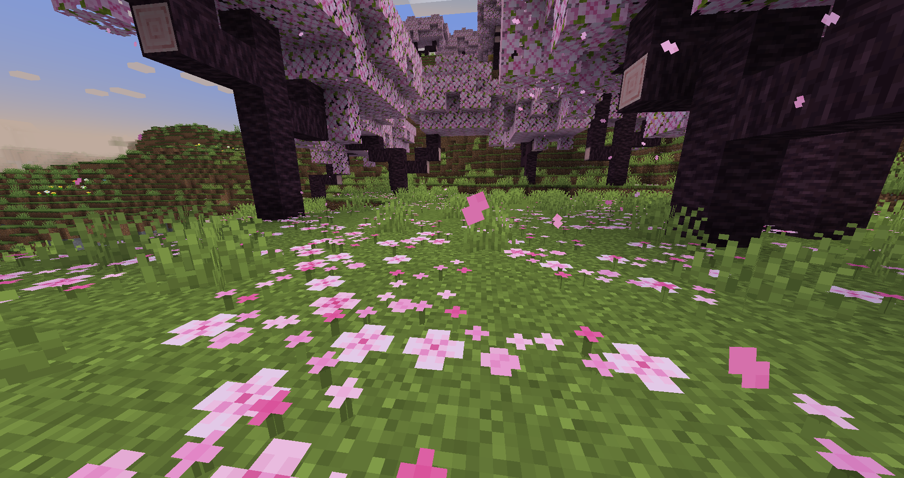

Surviving My First Night in Minecraft

My first night in Minecraft was far more stressful than I expected. I spawned in a sakura biome, punched a few trees for wood, and built a crafting table just as the sun started to dip below the horizon. By the time I had a wooden pickaxe, the sky was dark and the first zombie groans were already echoing across the hills.
I dug a small hole into the side of a hill, sealed the entrance with dirt, and waited it out with a handful of torches. It wasn't glamorous, but it worked. Lesson learned: always gather enough coal and wood before sunset, and never wander too far from your starting point until you have a bed and a few basic tools.